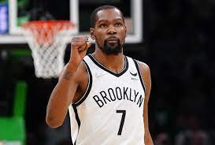
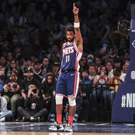
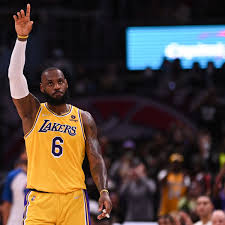

NBA ANALIST
|
IF YOU ARE A FAN OR SOMEBODY THAT WATCH THE NBA THIS IS YOUR PAGE .ANALIST AND PEOPLE
THAT IS IN THE BASKETBALL WORLD WILL BE JOIN US TO GIVE ALL FANATICS O GOOD POINT OF VIEW
OF WHAT IS HAPPENING IN THE LEAGUE IN A ARTICLE EVRY WEEK.
AND TODAY THE ARTICLE IS ABOUT-
WHY KEVIN DURANT IS THE BEST PLAYER IN THE NBA?
|
|
|
Its time to talk, and the true is that evrybody have his own opinion oubout who is the best ,
but now we are goin to talk with statistics who of these 5 player had more impact in the game ,
to the frist to the fifth.
LETS GO
1 KEVIN DURANT 35
 |
|
There is no doubt that Kevin Durant is a top-10 scoring talent of all time ,
because he has no comparison in terms of being a 6'10” sharpshooter with a wingspan that extends over 7 feet.
In raw talent, Durant has a solid argument for being one of the most uniquely unstoppable players to ever play the game
In 2021, Durant was named to the NBA 75th Anniversary Team.
As a member of the U.S. men's national team, Durant has won three gold medals in the Olympics (2012, 2016, and 2020)
and is the leading scorer in Team USA's men's Olympic basketball history.
He also won gold at the 2010 FIBA World Championship.
To finish, Durant has won two NBA championships, an NBA MVP Award, two Finals MVP Awards, an NBA Rookie of the season, and two Olympic Gold medals.
He is also one of the highest-earning basketball players off the court, thanks to his various endorsement deals,
and has an excellent philanthropic reputation
ir a complex info